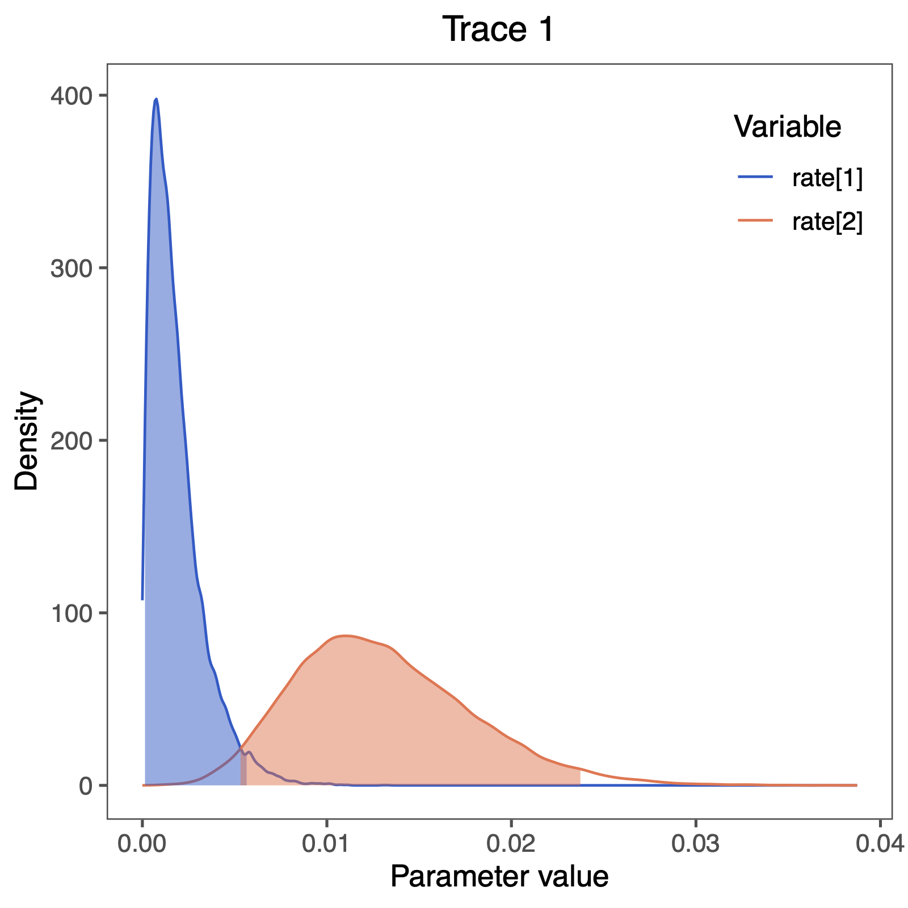

Example: Unequal Transition Rates
The instantaneous rate matrix encodes the transition rates between all pairs of evolutionary states. It is important to emphasize that all rate matrices are assertions about how morphological evolution operates. Depending on how one populates the rate matrix elements, different evolutionary hypotheses may be expressed.
When we model the evolution of morphological data, unlike nucleotide data, each change may require a sequence of intermediate changes. Getting to one state may require going through another. In short, it is probably not likely that one single model describes all characters well.
The ERM model makes a number of assumptions, but one that may strike you as unrealistic is the assumption that characters are equally likely to change from any one state to any other state. That means that a trait is as likely to be gained as lost. While this may hold true for some traits, we expect that it may be untrue for many others. $$ Q = \begin{pmatrix}
- & \mu_1
\mu_2 & - \end{pmatrix} $$ RevBayes has functionality to allow us to relax this assumption. For example, we can define the ratesrates := [ [0.0, mu_1], [ mu_2, 0.0] ]and then create the rate matrix
Q := fnFreeK(rates)which corresponds to the model $$ Q = \begin{pmatrix}
- & \mu_1
\mu_2 & - \end{pmatrix} $$ This is the independent rates model (Pagel 1994; Maddison 1994; Schluter et al. 1997), which we will explore in this tutorial.
Make a copy of the MCMC and model files you just made. Call them
mcmc_ase_ERM.Revand `model_ase_FreeK.Rev. These will contain the new model parameters and models.
Modifying the MCMC Section
At each place in which the output files are specified in the MCMC file, change the output path so you don’t overwrite the output from the previous exercise.
For example, you might call your output file output/solitariness_ase_freeK.log.
Change source statement to indicate the new model file.
Modifying the Model Section
Our goal here is to create a rate matrix with 2 free parameters. We will assume an exponential prior distribution for each of the rates. Thus, we start be specifying the rate of this exponential prior distribution. A good guess might be that 10 events happened along the tree, so the rate should be the tree-length divided by 10.
rate_pr := phylogeny.treeLength() / 10
Now we can create our two independent rate variables drawn from an identical exponential distribution
NUM_RATES = NUM_STATES * (NUM_STATES-1)
for ( i in 1:NUM_RATES ) {
rate[i] ~ dnExp(rate_pr)
moves.append( mvScale( rate[i], weight=2 ) )
}
Next, we put all the rates together into our rate matrix.
Don’t forget to say that we do not rescale the rate matrix (rescale=false).
We would only rescale if we use relative rates.
Q_morpho := fnFreeK( rate, rescale=false )
In this model, we also decide to specify an additional parameter for the root state frequencies instead of assuming the root state to be drawn from the stationary distribution. We will use a Dirichlet prior distribution for the root state frequencies.
rf_prior <- [1,1]
rf ~ dnDirichlet( rf_prior )
moves.append( mvBetaSimplex( rf, weight=2 ) )
moves.append( mvDirichletSimplex( rf, weight=2 ) )
We need to modify the dnPhyloCTMC to pass in our new root frequencies parameter.
phyMorpho ~ dnPhyloCTMC(tree=phylogeny, Q=Q_morpho, rootFrequencies=rf, type="Standard")
Now you are done with your unequal rates model. Give it a run!
Plotting the tree with ancestral states
As before in the Discrete morphology - Ancestral State Estimation tutorial, we will use R and the package RevGadgets (see the Introduction to RevGadgets Tutorial for an overview, Tribble et al. (2022)) to plot the ancestral state estimates.
Adapt your previous R script plot_anc_states.R Start R from the same working directory as you started RevBayes. Plot the ancestral state estimates.


Next, we want to actually see the estimated rates.
We can do this nicely in RevGadgets (see the Introduction to RevGadgets Tutorial, Tribble et al. (2022)):
library(RevGadgets)
library(ggplot2)
# specify the input file
file <- paste0("output/solitariness_freeK.log")
# read the trace and discard burnin
trace_quant <- readTrace(path = file, burnin = 0.25)
# produce the plot object, showing the posterior distributions of the rates.
p <- plotTrace(trace = trace_quant, vars = paste0("rate[",1:2,"]"))[[1]] +
# modify legend location using ggplot2
theme(legend.position = c(0.88,0.85))
ggsave(paste0("Primates_solitariness_rates_freeK.pdf"), p, width = 5, height = 5)

We also see some clear evidence that the rates of gain and loss are not equal.
This gives as a first indication that the free rates model should be supported over the equal rates model.
We observe that the rate of gain rate[1] is very low compared to the rate of loss rate[2].
Does this correspond to our observation of changes in ancestral state estimates, i.e., did we see more losses than gains?
Computing Bayes factors to test for model support
Let us now actually test if the independent rates model is supported using statistical model testing. Have a look at the General Introduction to Model selection tutorial for more information.
Copy and change your two MCMC scripts
mcmc_ase_ERM.Revandmcmc_ase_freeK.Rev.
You need to exchange the MCMC algorithm with the power posterior algorithm (Höhna et al. 2021).
Remove all lines after mymodel = model(phylogeny).
Then, you need to construct the powerPosterior, which works analogous to an MCMC.
In fact, it perform cats=63 MCMC runs.
We chose cats=63 as a conservative estimate.
Since this performs 64 MCMC simulations with 1000 iterations each, this can take a little while.
### Compute power posterior distributions```
pow_p = powerPosterior(mymodel, moves, monitors, "output/"+CHARACTER+"_ERM.out", cats=64, sampleFreq=10)
pow_p.burnin(generations=2000,tuningInterval=250)
pow_p.run(generations=1000)
The next step is to summarize the power posterior distribution, first using stepping stone sampling,
### Use stepping-stone sampling to calculate marginal likelihoods
ss = steppingStoneSampler(file="output/"+CHARACTER+"_ERM.out", powerColumnName="power", likelihoodColumnName="likelihood")
ss.marginal()
and then using path sampling.
### Use path-sampling to calculate marginal likelihoods
ps = pathSampler(file="output/"+CHARACTER+"_ERM.out", powerColumnName="power", likelihoodColumnName="likelihood")
ps.marginal()
You should see the following output
> source("scripts/ml_ase_ERM.Rev")
Processing file "scripts/ml_ase_ERM.Rev"
Successfully read one character matrix from file 'data/primates_solitariness.nex'
Attempting to read the contents of file "primates_tree.nex"
Successfully read file
Running burn-in phase of Power Posterior sampler for 2000 iterations.
The simulator uses 1 different moves in a random move schedule with 2 moves per iteration
Progress:
0---------------25---------------50---------------75--------------100
********************************************************************
Running power posterior analysis ...
Step 1 / 66 ****************************************
Step 2 / 66 ****************************************
Step 3 / 66 ****************************************
...
Step 65 / 66 ****************************************
Step 66 / 66 ****************************************
-31.68466
-31.68498
Note that last two numbers; these are your marginal likelihood estimates.
Compute the Bayes factor! Which model is supported?
Click below to begin the next exercise!
- Höhna S., Landis M.J., Huelsenbeck J.P. 2021. Parallel power posterior analyses for fast computation of marginal likelihoods in phylogenetics. PeerJ. 9:e12438.
- Maddison D.R. 1994. Phylogenetic methods for inferring the evolutionary history and processes of change in discretely valued characters. Annual Review of Entomology. 39:267–292.
- Pagel M. 1994. Detecting correlated evolution on phylogenies: a general method for the comparative analysis of discrete characters. Proceedings of the Royal Society of London B: Biological Sciences. 255:37–45. 10.1098/rspb.1994.0006
- Schluter D., Price T., Mooers A.Ø., Ludwig D. 1997. Likelihood of ancestor states in adaptive radiation. Evolution. 51:1699–1711.
- Tribble C.M., Freyman W.A., Landis M.J., Lim J.Y., Barido-Sottani J., Kopperud B.T., Höhna S., May M.R. 2022. RevGadgets: An R package for visualizing Bayesian phylogenetic analyses from RevBayes. Methods in Ecology and Evolution. 13:314–323. https://doi.org/10.1111/2041-210X.13750